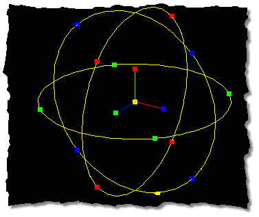

To rotate a selected group of control points, click the Rotate Manipulator
button. A yellow manipulator sphere will appear around the selected control
points with colored handles around the edges. Each of the handles along the edges
of the manipulator correspond in color to the X, Y, and Z axes, so dragging the
handle matching the color of the axis you wish to rotate the selected group
around will allow the selected points to rotate only in that axis.
Once the object to be rotated is selected, click the Rotate Manipulator
button, then drag the appropriate manipulator sphere handle.
In the above image, dragging the red handles on either side of the manipulator
sphere would rotate the selected control points around the X axis only, while
dragging the green handles at the top or bottom of the sphere would rotate the
selected control points around the Y axis. Notice the lack of handles that
share two axes color codes. This is because the manipulator sphere can actually be
dragged from any point on the sphere… just point at it with the mouse, hold
down the button, and drag to rotate.
The axis of rotation can be changed by pointing and clicking at the
appropriate handle on the pivot and dragging the mouse.
The Group Tab on the Properties Panel also allows direct entry of rotation
values. Rotation is listed in degrees from -180 to 180, with 0 being equal to
the original position of the control points when rotation first started. When the
mouse button is released after rotating, the rotation value will snap back to
0, as the grouped control points have assumed a new rotation.
The Rotate Manipulator also allows pivot movement by dragging the pivot
handles with the mouse. This is to allow repositioning of the pivot for lathing,
rotation, etc. Keep in mind that the pivot is very important for using this tool
because it determines around which point the selected group will rotate.
The default keyboard shortcut key for the Rotate Manipulator is R. Pressing R
will switch the Standard Manipulator to the Rotate Manipulator, and pressing R
a second time will switch the Rotate Manipulator back to the Standard
Manipulator.
Related Topics:
Translate Manipulator Mode
Scale Manipulator Mode